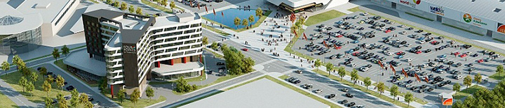

Холдинг «РАМО-М» — на 12-м месте в рейтинге 100 крупнейших девелоперов ТЦ России

В рамках Международного инвестиционного форума «Сочи-2013» было подписано соглашение между холдингом «РАМО-М» и Администрацией Краснодарского края о строительстве в г.Краснодаре гостиничного комплекса Four Points by Sheraton Krasnodar и многофункционального выставочно-конгрессного комплекса «Экспосити ЮГ».
Открытие гостиничного комплекса Four Points by Sheraton Krasnodar и ВКК «Экспосити ЮГ» запланировано на четвертый квартал 2015 года. Единовременный запуск проектов, объединение потенциала выставочного центра и отеля с мировым именем дадут эффект синергии и конечную выгоду для будущих клиентов.
Выставочно-конгрессный комплекс будет состоять из 4 павильонов, входной группы, конференц-залов, открытых выставочных площадей и парковки для посетителей. Его общая площадь составит 51 080 кв.м. Начало строительства запланировано на конец 2013–начало 2014 года. Окончание работ и сдача объекта в эксплуатацию — четвертый квартал 2015 года.
Новый выставочный центр откроет возможности для создания и реализации новых проектов, повышения качества выставочных и конгрессных мероприятий, дальнейшего их развития, а также проведения культурно-массовых мероприятий, что, безусловно, станет важным фактором развития экономики города и края.
«С открытием выставочного центра экономика города и края получит дополнительный импульс как внутренних, так и зарубежных инвестиций. Новый выставочный комплекс позволит завести в город новых производителей. При проектировании и строительстве использованы современные технологии, а также мировой опыт строительства выставочных центров Германии, Франции и других стран» — рассказал генеральный директор «РАМО-М» Константин Севастьянов.
Основным выставочным оператором в новом выставочно-конгрессном комплексе станет компания «КраснодарЭКСПО» (в составе Группы компаний ITE).
«Появление нового выставочного центра, соответствующего современным мировым стандартам – положительный фактор для развития выставочной деятельности в регионе, позитивно отражающейся на его экономике и повышении инвестиционной привлекательности, как на федеральном, так и на международном уровне.
Проведение выставочных мероприятий содействует появлению дополнительных рабочих мест, увеличению оборота транспортно-логистических компаний, гостиниц, предприятий общественного питания – эти факторы положительно влияют на экономические показатели региона» – прокомментировала подписание соглашения генеральный директор ООО «КраснодарЭКСПО» Елена Конькова.